Pré-processamento do sinal de um fotopletismógrafo de baixo custo
Danilo Souza Lima
Introdução
Fotopletismógrafo
Ex. Saturímetro
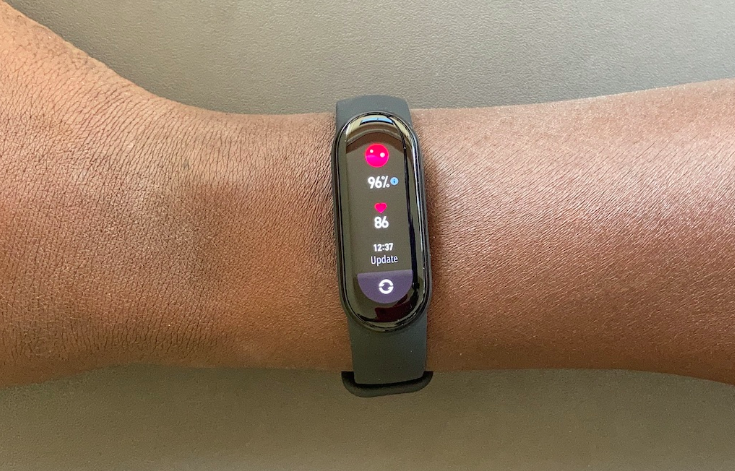
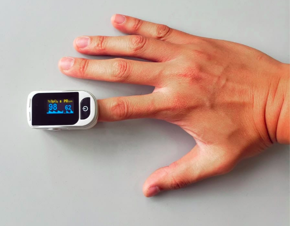
Funcionamento
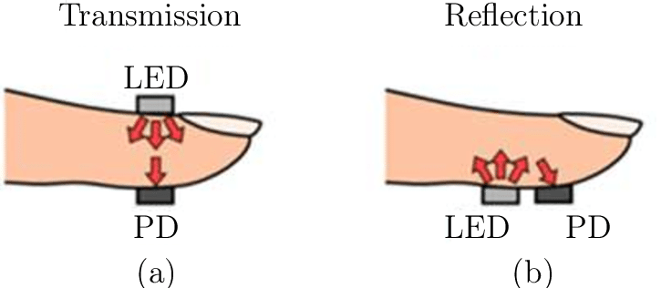
Sinal do PPG
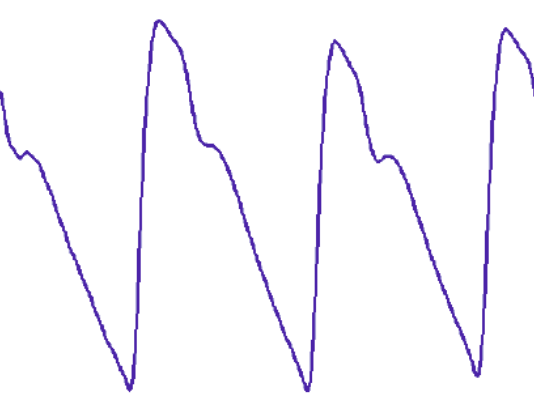
Características do Sinal PPG
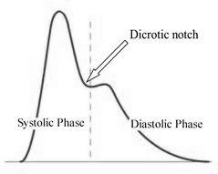
Formulação do problema
Justificativas do trabalho
-
Ruídos inerentes ao funcionamento
- Ruídos eletromagnéticos
- Respiração
- Fototipo
-
Outros fatores:
- Deve ser um equipamento de baixo custo
- Pode ser utilizado por não profissionais
- Pode ser utilizado em ambientes não controlados
Objetivos
- Tratar o sinal de forma a possibilitar a extração de
características como:
- Pulsação
- Ponto diacróico
- Período de sístole e diástole
- Testar diferentes formas de tratamento do sinal
- Executar tratamento do sinal online
- Executar tratamento do sinal offline
Materiais e métodos
Hardware Implementado
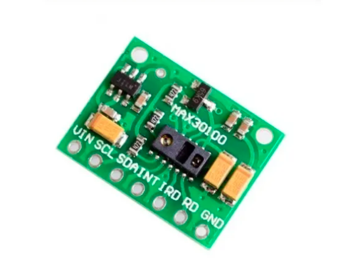
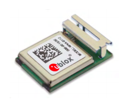
Hardware Implementado

Hardware Implementado

Sinal sem tratamento
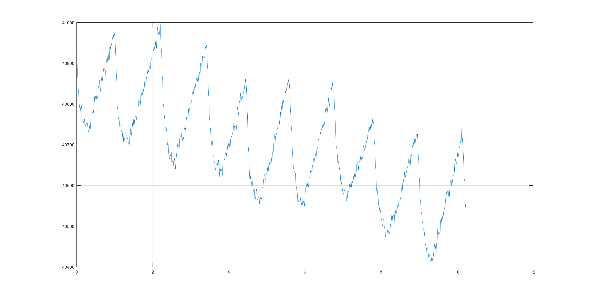
Magnitude do sinal
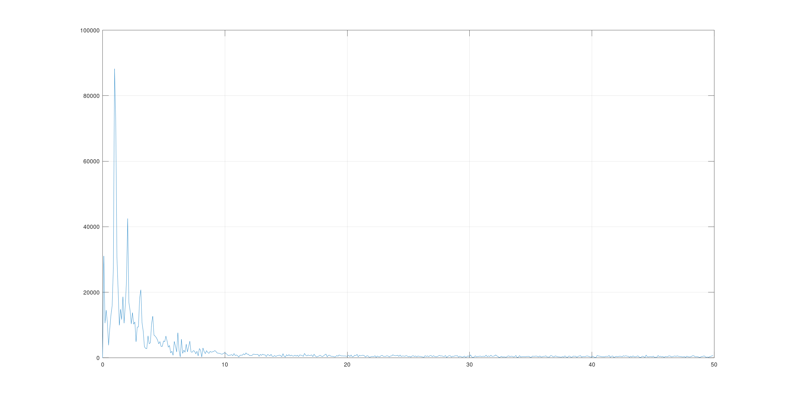
Software Implementado
Resultados
Filtro FIR
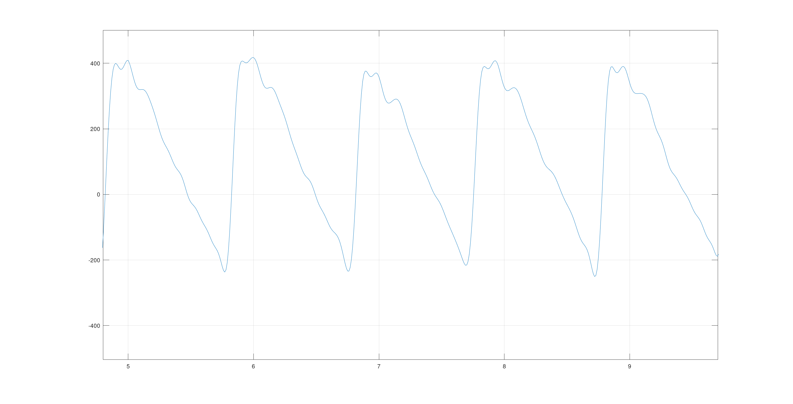
Filtro IIR
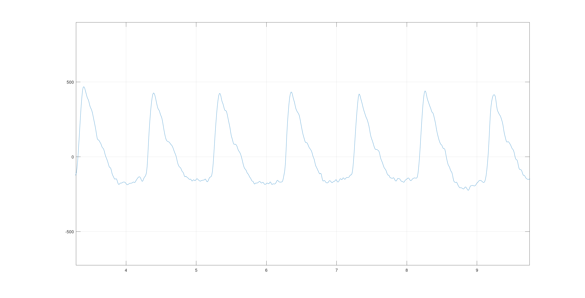
Conclusão
Qualidade do pré-processamento
- Mesmo com um equipamento de baixo custo, pode ser eficiente
- O tratamento de forma online com filtro IIR é suficiente para obtenção de algumas características
- O tratamento de forma offline apresenta ótimos resultados comparado com o sinal de referência